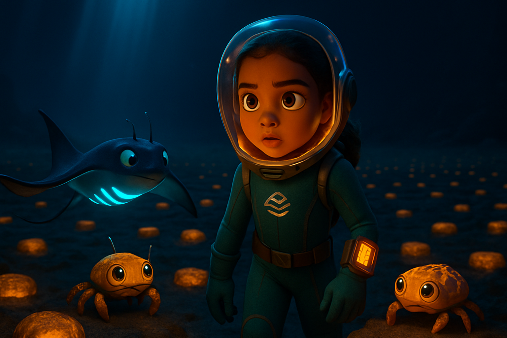
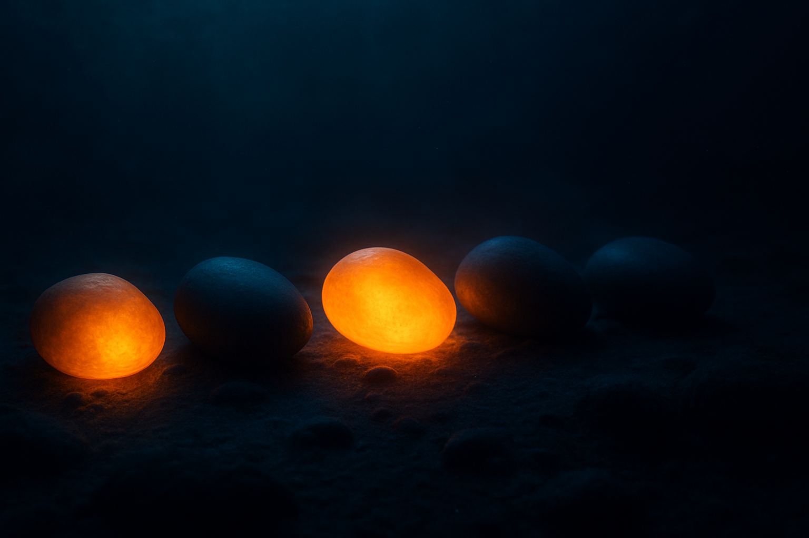
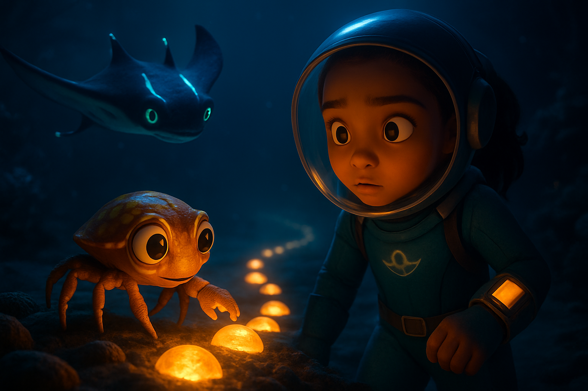
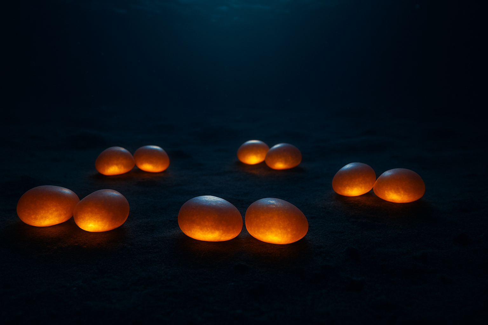
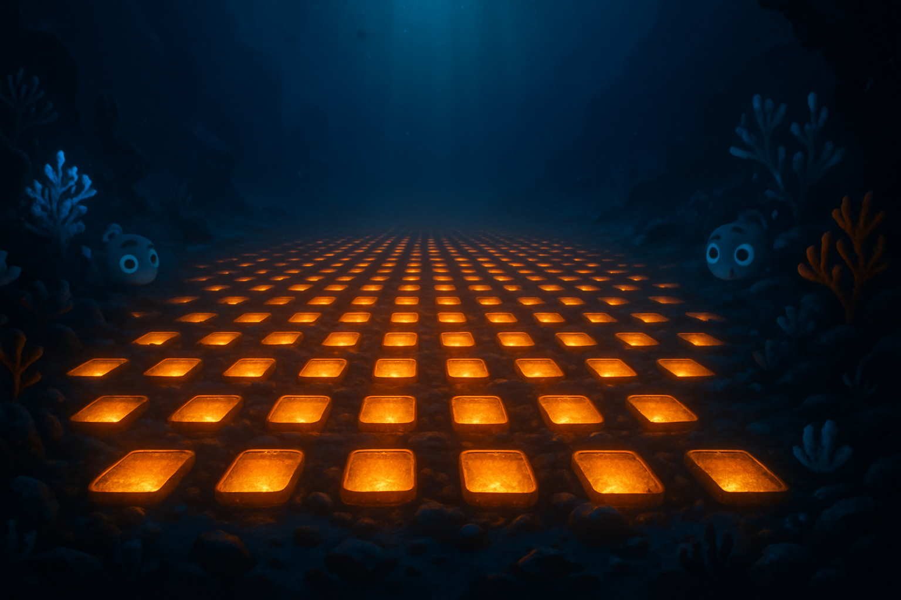
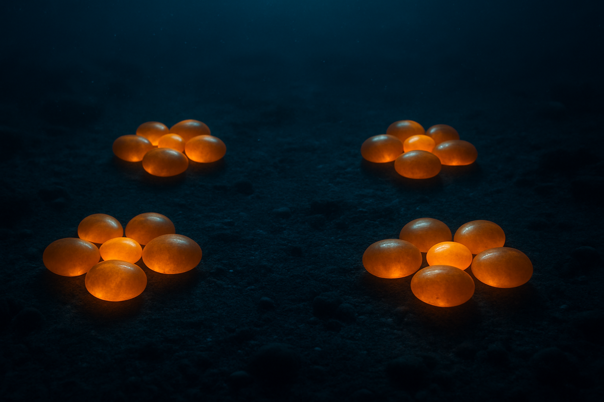
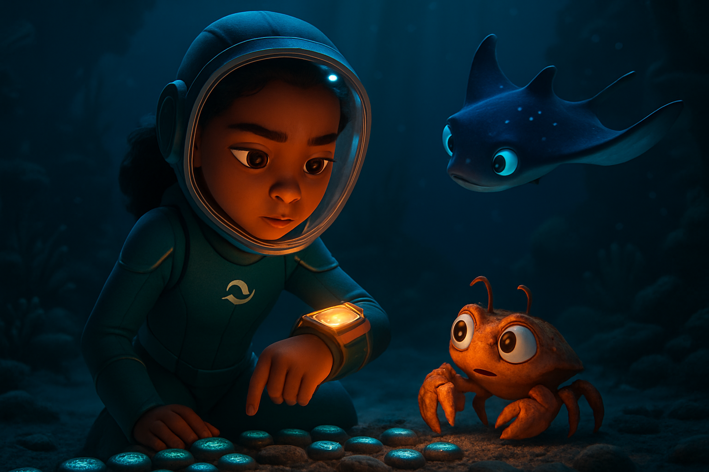
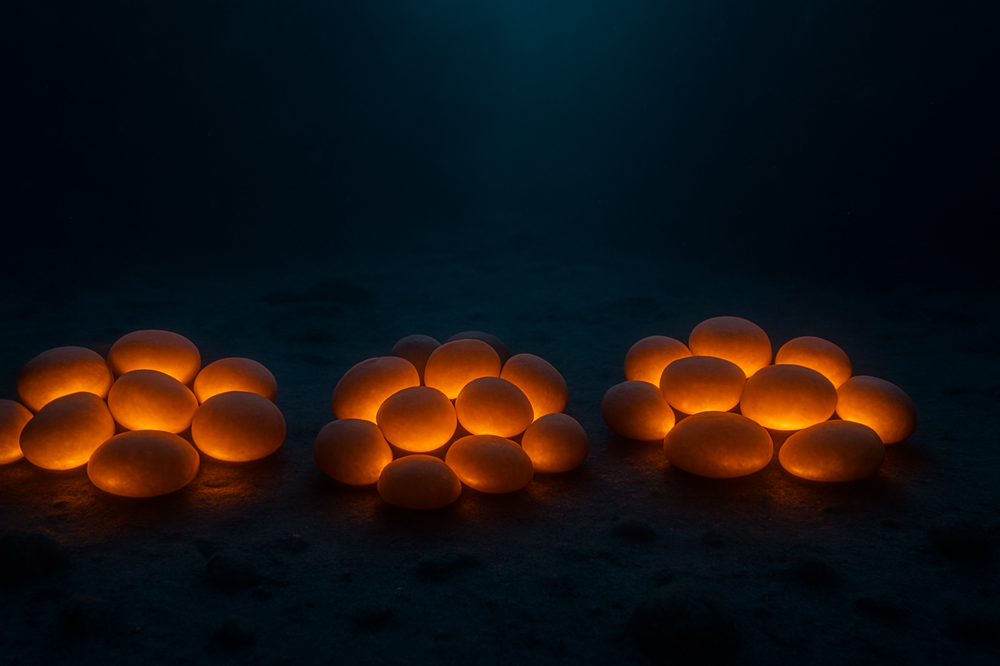
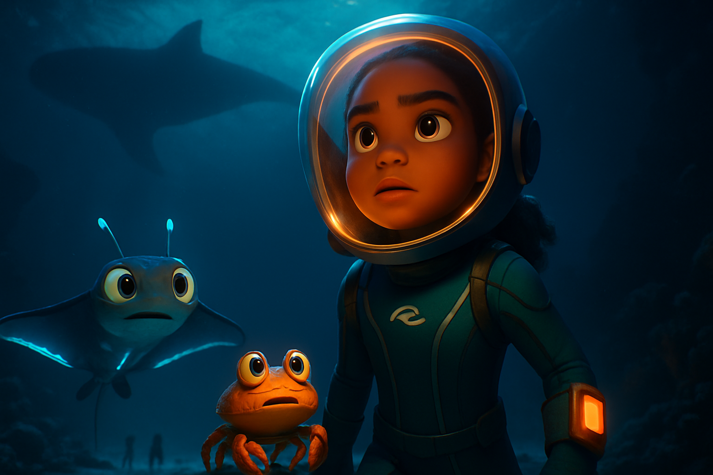
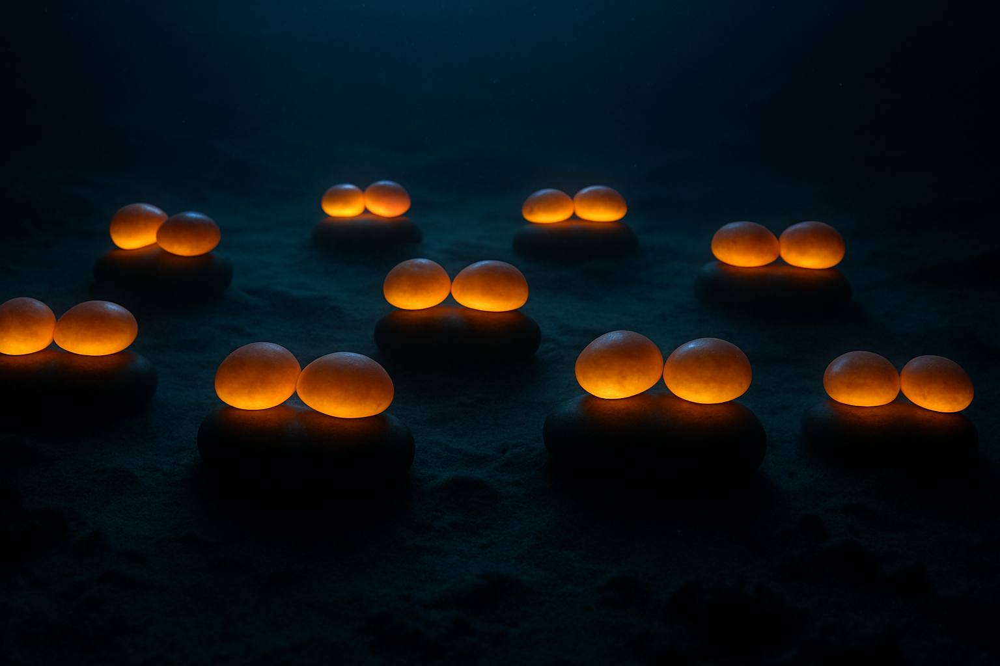

The Ocean Arc · Issue 2
Marina and Flick follow Wren to the outer Lattice fields, where something enormous casts a shadow.
Narrated by Eric · Marina voiced by Jessica · Elder Luma voiced by Bill

Remember groups of from Issue 1? The Lattice sends signals in equal groups. Wren tells Marina the outer stones are arranged in groups of 2, groups of 5, and groups of 10. Skip counting is the same as multiplying.









You helped Marina and Wren map the fault in the Lattice using skip counting. Skip counting by 2s, 5s, and 10s is just multiplication in disguise. And something enormous is up there, above the Lattice.
Next issue: Rows and Columns — Elder Luma takes Marina to the Archive to find records of the last time the Hum was heard! 🌊
🌊 Issue 3 — Rows and Columns ➜